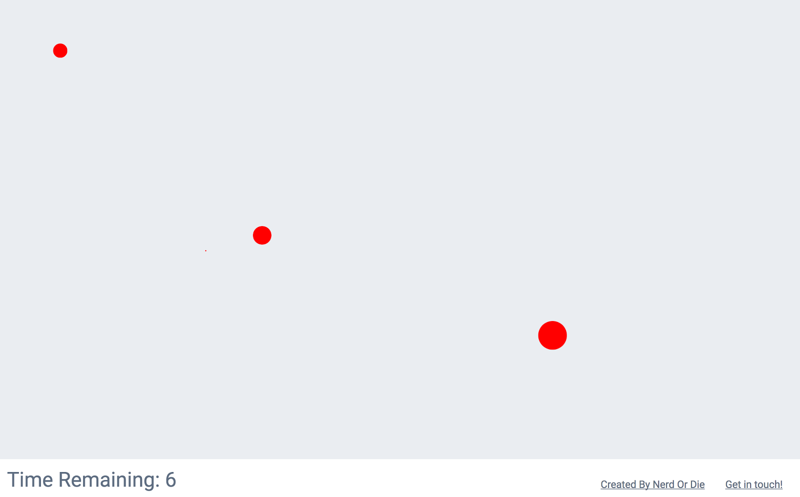

Introduction
As the user interface has evolved from text-based command line to modern graphical interface, the main input devices have shifted from keyboards to mice. Today, the average active time on mouse is almost 3 times than the active time on keyboards (Odell, 2015). According to Odell (2015), the intensive mouse usage has been identified as one of the key risk factors for Musculoskeletal disorders (MSDs) such as carpal tunnel syndrome. Ergonomic mouse is therefore designed to alleviate the discomfort when using the standard mouse for a long period of time.
The first ergonomic mouse that I could find is the Evoluent ergonomic mouse which was invented and patented by Jack Lo (founder of Evoluent) due to the discomfort he had when using a standard mouse (Evoluent, 2017) in 1994 (see figure 1). The concept of an ergonomic mouse has been around for about 23 years and it was only introduced about 10 years later than the first widely used mouse which ships with Apple Macintosh as standard equipment (Greenemeier, 2009) in 1984. However, the ergonomic mouse has not become the mainstream point and click device as the standard mouse. In the following sections, we will uncover some of the reasons of why people prefer to use the standard mouse.
What is an ergonomic mouse:
Based on the definition from webopedia (2017), an ergonomic mouse is a type of mouse that has been designed to reduce muscle strain and decrease the chance of injuries (such as carpal tunnel syndrome, arthritis, and tendonitis) by fitting more naturally in hand when being used.
Benefits of using ergonomic mouse:
Because the natural resting position of the wrist and forearm is the ‘thumbs-up’ position contrast to the position the standard flat mouse puts you arm in and rotating the forearm to get the hand in a palm down position (pronation) based on Ergo Inc (2017). Most ergonomic mice are therefore designed with a vertical grip to achieve a natural hand position. One of the main benefits of using a ergonomic mouse is it can prevent pronation (which is highly associated with carpal tunnel syndrome).
Methodology
What is qualitative research:
Qualitative research is characterised by its aims (which relate to understanding some aspect of social life) and its methods which generate words rather than numbers as data for analysis (Brikci, 2006). Qualitative research is especially effective in obtaining specific information about individual’s opinions, experiences and values. It provides information about the “human” side of an issue such as contradictory behaviors, opinions, emotions and relationships between individuals (Northeastern University, 2017).
What are some qualitative research methods:
The three most common qualitative research methods are participant observation, in-depth interview and focus groups. Each method is suited for obtaining a specific type of data (Northeastern University, 2017).
- Participant observation is appropriate for collecting data on naturally occurring behaviors in their usual contexts.
- Interviews are optimal for collecting data on individuals’ personal histories, perspectives, and experiences, particularly when sensitive topics are being explored.
- Focus groups are effective in eliciting data on the cultural norms of a group and in generating broad overviews of issues of concern to the cultural groups or subgroups represented.
Our Research question:
Our research question is “why do people prefer using standard mouse over ergonomic mouse”.
Why we chose qualitative research:
Our research question try to uncover some of the reasons on why people prefer using standard mouse instead of the ergonomically designed mouse which are supposed to be more comfortable in hand. It focuses more on the human side of issue which is about individual’s experience of using different mouse and their opinions. Qualitative research is ideal to help us resolve this research question.
What are our methods:
Our group decided to use both participant observation and in-depth interviews as our research methods.
- Participant observation: We gave all participants the same set of tasks to perform to get them used to both standard and ergonomic mouse. When they are using both mouse to perform tasks, we observed how they use both mouse to find some common patterns and take notes. The tasks we gave them include both daily activities (such as copy and paste text from a website to a word document, drawing different shapes on the Microsoft Paint) and a simple online mouse accuracy clicking test (see figure below). The reason we included the mouse accuracy test in the tasks is because we want to understand if there is any difference in point and click accuracy between standard and ergonomic mouse (which could be one reason why people prefer using standard mouse). A full description of the task can be found in the appendix section.
- 
- Interview: After the participant finished the task, we interviewed them to find out which one they prefer to use and why. The type of interview we did is semi-structured interview which provides a clear set of instructions for interviewers that could provide reliable, comparable qualitative data and also allow interviewers to follow topical trajectories in the conversation that may stray from the guide when he or she feels appropriate (Cohen, 2006).
We designed our questions based on the guideline from Brikci (2006) that it should aim to be reproducible (some else could use the same topic guide to generate similar information), systematic (not just picking interviewees or data that support our pre-existing ideas about the answers), credible (the question should be reasonable for generating valid accounts of phenomena), and transparent (so that they know how the data is collected and analysed). Some of our interview questions include: “Was there anything specifically that you found particularly easy or difficult when using ergonomic mouse? If yes, what and why?”, “Would you use the ergonomic mouse for daily computer activities? Why or why not?”, “What is your opinion on the ergonomic mouse? Any thoughts, comments or suggestions?”
Sampling:
Choosing a study sample is a crucial step in any research project since it is rarely practical, efficient or ethical to study whole population (Marshall, 1996). We acknowledge that we might not use the most effective sample strategy to gather data as we only have limited amount of time and resources. However, we try our best to ensure the reliability and quality of our data by having a larger sample size of 10 and making sure the sample group consists of different sexes, majors and cultural backgrounds. By choosing proper sample group and sample size enable us to generate more meaningful and credible data to draw conclusion on.
Results


The two graphs above show the results from the experiment we conducted to test the mouse accuracy between an Optical Mouse (HP T3A002) and Ergonomic Mouse (Evoluent Vertical Mouse 4). Participants had to do/play a test/game at mouseaccuracy.com, where you have to click on the objects that appears on the screen before it totally disappear. This game tests the accuracy of the mouse by recording your score and displaying the number of successful and unsuccessful clicks. They show the average results from the three attempt they did.
Successful Clicks
The Graph on the left compares the Successful Clicks between the Optical Mouse Clicks and Ergonomic mouse. From this we can clearly see that participants using the Optical Mouse have a much higher accuracy score than participants using an Ergonomic Mouse. The combined average of successful clicks for all the participants using the Optical mouse was 13.3 whereas the for the Ergonomic mouse, it is a paltry 5.3, with one participant only managing to get 1 successful click.
Misclicks
The graph on the right compares the Misclicks between the Optical Mouse and the Ergonomic Mouse. In this we can see that the opposite holds true, there is a drastic increase in the number of misclicks whilst using the Ergonomic mouse as compared to the Optical Mouse. The participants using the Optical Mouse had a total average of 2.7 with 1 participant having no misclicks! Whereas the total average for Ergonomic Mouse was 5.7
All participants are familiar and have used a standard mouse, however around half stated that they use the trackpad of a laptop more. Many participants mentioned that the greatest source of the difficulties and uncomfortableness or due to the unfamiliarity with the ergonomic mouse. as they use it on a day to day basis whereas all participants stated that they have never used a similar ergonomic mouse before. They claim that they have never heard of it even though this specific style of mouse has been around since 2002 (Campbell et al., 2002).
All participants prefered using an optical mouse because they are user friendly and easy to understand compared to the ergonomic mouse. Participants stated that they have never used a similar ergonomic mouse before. They claim that they have never heard of it even though this specific style of mouse has been around since 2002 (Campbell et al., 2002). The participants couldn’t understand how to use the ergonomic mouse and users needed more assistance. Some people didn’t know how to copy due to the lack of knowledge of the third button on the mouse.
All participants are familiar and have used a standard mouse, however around half stated that they use the trackpad of a laptop more. Many participants mentioned that the greatest source of the difficulties and uncomfortableness or due to the unfamiliarity with the ergonomic mouse.

Majority of the participants stated that they found using the standard mouse to complete the tasks either easy or very easy. Only one participant found using the standard mouse neither easy nor difficult. None of the participants found using the standard mouse difficult or very difficult. In contrast to the standard mouse, only one participant found using the ergonomic mouse easy to use. Most of the participants stated that they found using the ergonomic mouse to complete the tasks either difficult or very difficult. One participant found using the ergonomic mouse neither easy nor difficult. All participants stated that they found the standard mouse overall easier to use for completing the tasks.

A few participants mentioned that the ergonomic mouse was particularly difficult to use when completing the clicking test because it was harder to control. This could be because the ergonomic mouse uses upper arm muscles to move it instead of lower arm muscles used to move the standard mouse. Movements made with larger muscle groups are less precise unlike the fine smaller movements made using smaller muscle groups (Scarlet, 2005). The loss of finer movements made the clicking test more difficult.
Some participants mentioned that some difficulties arose from the button positions of the ergonomic mouse. They couldn’t be seen from the way the mouse is gripped. They weren’t distinguishable through tactile means. They also felt that the arrangement of the buttons was not instinctively placed. This was exhibited when many made the mistake of assuming the middle button had the right click functions when it was the third button that had those functions. Some didn’t even realize that there was a third button to use.
Participants found all the activities more difficult to perform using the ergonomic mouse except one. Several participants mentioned that the ergonomic mouse was easier to use for drawing shapes in the “Microsoft Paint” program. It was also exhibited in the results of their drawings. The shapes drawn using the ergonomic mouser significantly better looking compared to the shapes drawn using the standard mouse. Some of the participants thought that this was because the grip of the ergonomic mouse is like the way a pen is gripped when drawing on paper.

Majority of the participants stated that they found using the standard mouse very comfortable or comfortable when completing the tasks. Two participants stated that they found the standard mouse neither comfortable nor uncomfortable to use. Only one participant found the standard mouse uncomfortable to use. The ergonomic mouse got very mixed feedback when it came to comfortability of use. Four participants stated that they found using the ergonomic mouse comfortable or very comfortable when completing the tasks. Another four participants stated that they found using the ergonomic mouse uncomfortable or very uncomfortable. The remaining two participants found the ergonomic mouse neither comfortable nor uncomfortable. 80% of the participants found the standard more comfortable to use. The remaining 20% found the ergonomic mouse more comfortable to use.

These results were unexpected considering that the ergonomic mouse was designed with comfort in mind. The ergonomic mouse’s shape supports the user’s hand in an upright neutral position. This prevents forearm twisting that usually results from the user’s hand position when using a standard mouse, thus alleviating wrist pain (Campbell et al., 2002). While the ergonomic mouse is designed to reduce wrist movement they also increase muscle activity in the shoulders (Scarlet, 2005). Instead of exerting effort with the lower arm, effort s exerted with the upper arm. This could be the one source of the discomfort experienced by the participants. It was also mentioned by some participants that the mouse felt heavier to move because it was so bulky. One participant likened moving the mouse to moving a cup. This could be another source of discomfort for the participants.
All participants stated they prefer to use the standard mouse over the ergonomic mouse. However, if they were given an ergonomic mouse they around half of the participants said they would try to use it. 40% of the participants said they would use the ergonomic mouse for daily or leisure activities. They stated that their reason for agreeing to use it was because there is no need to be very efficient for daily or leisure activities so it wouldn’t matter much to use the ergonomic mouse. They also stated that given enough time they believe they would get familiarized with it and thus become more efficient with it. 60% of the participants said they would use the ergonomic mouse for work related activities. They stated that their reason for agreeing to use it was because of the comfort it offers for long hours of work. Despite the it’s inefficiency they would use the ergonomic mouse because they prioritize their health more. Participants who stated they would not give the ergonomic mouse a chance because it was unreliable.


Reflection
Yilun Wang
Responsibilities:
I have three main responsibilities in this project. First of all, I am responsible for the communication with lectures. I talked to both lectures about how to improve our research question. Robert suggested us to change our research topic from a quantitative research on comparing efficiency between trackpad and mouse to a qualitative research evaluation of an ergonomic mouse. I suggested his advice to our team and after some discussion we decided to take Robert suggestion. Secondly, I am responsible for conducting the individual interview along with Yani. We wrote notes and video recorded each interview so that we could analysis the data later on. Last but not least, I am responsible for researching about ergonomic mouse and qualitative research. After the research, I wrote the introduction and methodology section of the report.
What I have learned:
Research methods
I have no idea about what are qualitative and quantitative research before. After my research about both methodology, I have a much better understanding of both of them and when to use which one. After the qualitative research we conducted, I gained some practical experience of conducting a qualitative research and how to perform each step from designing the research to conducting it to analysing the results.
Interview techniques
Since I was involved in the interview process, I learned several things about how to be a better interviewer. For starter, always start with small talk to build a rapport with the interviewee so that they are more willing to open themself. Also, as Cohen (2006) mentioned in his qualitative research project, silence on the part of the interviewer is golden and can give the interviewee time to think and speak. When you give them more time to think and speak, it’s more likely to have a better answer based on my experience. Lastly, continuously improve the questions you ask to the interviewee based on the response you have with the previous interviewee. For example, I found it really hard to ask the question to choose an answer from Very easy, Easy, Neither easy nor difficult, Difficult, Very difficult so we decided to change it to rate it from 1 to 5 where 1 is easiest and transfer the answer back to the original one after the interview.
Project need management
We do not have one person to manage the project. I always believe people do not need project managers as we know what to do and will work autonomously. However, this is not true, as people do not know what to do, when they should do it and when it is expected to finish it. If we have someone who took the project manager role, the project would go much smoothly and finish earlier.
What could be done better:
Better sample group
We could have better sample group with a more diverse occupation as we currently only have students in our sample in our research.
Better time management
As a full time student, it is hard to management the balance between all the studies. One of the reason we did poorly in our time management is that we think we have plenty of time to finish this assignment since it is due at the end of semester. So we did not plan our time really well. We should divide the assignment into several main deliverables and have a due date for each of it. For example we could break it to, coming up with a research question, conducting the research, writing report, making website.
Alyana Rodriguez
Immediately at the start of the project we ran into some difficulties. We had trouble coming up with a suitable topic. Firstly, because formulating a good research question was hard. Second, problems regarding our proposed topic came up forcing us to switch topics several times. We spent up majority of the time deciding on a topic. We then proceeded with designing the experiment.
Conducting the interview was the most difficult part of the experiment. Many unexpected situations arose. I quickly discovered the participants would share their thoughts even without being prompted. On many occasions, they would stray from away the topic of the current question. I also found that participants sometimes don’t always answer the questions the way you expect them to. When asked to rate how easy or difficult the task was based on choices we give them, some give answers that aren’t included in the choices. One more thing I noticed was that participants interpret some questions very differently from others participants. This was very evident they were asked about comfort. By comfort we meant in terms of alleviation from strain or pain. Some would interpret comfort as familiarity. Even when we define what we mean by comfort when we ask the question they tend to explain their answer using their own interpretation of the word.
Analyzing the results and documenting the research in the form of a website went smoothly. There was a slight confusion about how analyze qualitative data but we got around that quickly. One thing I learned from our research was that there are tradeoffs when it comes to product design. It cannot be everything at once. For the ergonomic mouse learned that there is a tradeoff between efficiency and comfort as well as a tradeoff between the lower arm exertion and upper arm exertion.
One thing we could have worked on was time management. Each of the members of the group are very busy with assignments and exams for other classes. Because of the difficulties of meeting up to work together, we assigned individual work for each member to finish. Then once everyone was done we would get together and combined our results. While this allowed us to accomplish our tasks it also took us longer because the gaps between our meetings were very long.
Sadik Jama
Role: My role in this project was to come up with a list of tasks that all participants will have to complete with both optical and ergonomic mouse and also to help with the development of our website. As a group, we all had to contribute to the research and documents of our final report.
Background: I enrolled into this paper because I needed one more elective. I was interested in taking this paper based on the Arion description of this paper. Friends also gave me great feedback about this course and how it makes you think outside the box so I decided to challenge myself and take this course.
Teamwork: As I group I believe everyone contributed and equal amount.I believe this was one of the main aspects of the assignment that went well no one had to carry anyone so that was great to see. Also everyone had something to bring forward to the team to help up succeed.
Reflection of the experiment: Our main idea for our experiment was to undertake a qualitative study to gather data. Our experiment consisted of two parts. The first part, participants would do a list of activities and play a game with both an optical mouse and ergonomic mouse. The second being an interview in which participants would answer a list of questions about both computer mice and how they felt about it and which one they preferred.
I believe our experiment could’ve been a lot better if we had more time to prepare and find the right methodology with the right participants. All our participants had come from a computer-based background which meant that they were very familiar with an optical mouse rather than an ergonomic mouse. When asking our participants if they had come across an ergonomic mouse majority answered no. We can learn from our mistakes and ask before we start the experiment because it can get rid of bias results in our experiment.
A potential way of removing bias results could’ve been by having participants that were not familiar with the optical mouse. For example, if our participants were primary students, it could’ve given us better results due to the fact that they would’ve had no preferences since they do not use a computer often.
Our main set back we faced as a group that needs improvement is our communication. Communication at the start of our experiment could’ve been a lot better. This was due to the fact that we did not know what to do and how to go about it let alone have a proper research question and methodology. However once we thought we had an idea and approached, Robert, our lecturer suggested we change our idea and use an ergonomic mouse instead of a touch pad. By getting this new suggestion, it set us back since we had already had researched about a trackpad. This limited our time to get significant amount of research about the ergonomic mouse and what type of methodology best suits our study. So we automatically started rushing because all our peers were quite ahead of us and we were short on time.
What I learnt from this research is was how important time management and communication was. If we had better managed our time with this project; our team would have completed the tasks for our experiment more efficiently. Communication was also an important lessened learned because if we had communicated with our lecturer earlier by asking for help when we were stuck, we would have been able to understand how to approach this project in the right direction. I had also upskilled in web development by learning HTML. Due to doing a networking major, I had not come across HTML coding, therefore, learning HTML was an important skill because it is one of the key languages for web development.
Hotanya Ragtah
This assignment was a very interesting one, one where I did things I probably wouldn't have done normally (interviewing people for an experiment). At the start of the project we were all very unsure of what to do and we ended up wasting a lot of time trying to find a suitable topic. After consulting with the lecturers, we had to change our topic twice which lead to a lot of confusion in terms of what we are doing. I feel if we had consulted the lecturers from the beginning, we would have come to a topic earlier, and our quality of work would’ve been better.
I am majoring in IT Service Science so the whole course was completely different to what I study, however since I have studied computer science before and have experience in coding, I was able to apply that knowledge in making the website and the assignment in whole. However due to time constraints, the website isn’t up to the standard that I wanted and there are many design and layout flaws. Also since we wrote all out matter on either Word or Google Doc, it was hard to replicate the same formatting on the website. Coding the website rather that using a website maker presented a fun challenge and it refreshed my memory of HTML, CSS and Javascript which was, unfortunately, slipping away.
As a team I think we did worked very well, though we all strayed away from the topic at some point. We had good communication, met regularly and got a fair bit of work done. We each had different experiences and knowledge which helped us during the assignment, whether it be to plan how to do the experiment or understanding the question. On the last day there was a lot of pressure on all of us to get everything done as we still had a fair amount of work to do, if we had started earlier, we could have easily avoided this.
I feel we could’ve designed the experiment a bit better. We could have gotten more conclusive results and some valuable information if we had interviewed the participants after we analysed our results, incase we missed out on asking them some critical question. Despite that I learnt about the different research methodologies we can use to conduct a research experiment. Im sure this will help me in the future for any research I may undertake. I also learnt about all the different HCI principles and how they are actually much more important than they seem. It is used in marketing and computing all the time and we don’t even realize it.
References
Brikci, N. (2006). A Guide to Using Qualitative Research Methodology. https://d1pbog36rugm0t.cloudfront.net/-/media/science/research-and-teaching/teaching/qualitative-research-methodology.pdf
Cohen D, Crabtree B. (2006). "Qualitative Research Guidelines Project." http://www.qualres.org/HomeSemi-3629.html
Ergo Inc (2017). The benefits of vertical mouse. http://www.ergoconsulting.ca/blog/the-benefits-of-a-vertical-mouse/
Evoluent (2017). The Evoluent story. https://evoluent.com/about/story/
Greenemeier, L. (2009). Origin of the computer mouse. Scientific american. https://www.scientificamerican.com/article/origins-computer-mouse/
\Marshall, MN. (1996). Sampling for qualitative research. Family Practice; 13: 522-525.
Northeastern University (2017). Qualitative Research Methods: A Data Collector’s Field Guide https://course.ccs.neu.edu/is4800sp12/resources/qualmethods.pdf
Odell, D., & Johnson, P. (2015). Evaluation of flat, angled, and vertical computer mice and their effects on wrist posture, pointing performance, and preference. Work, 52(2), 245-253. doi:10.3233/WOR-152167
Campbell, K., Bean, A. C., Polack, P., & Stuthridge, R. (2002). Wrist. Campbell's Operative Orthopaedics, 4, 3445-3500.
Scarlett, D. (2005). Ergonomic mice: comparison of performance and perceived exertion. Usability news from Software Usability Research Laboratory at Wichita State University.
Appendix
see in the appendix folder